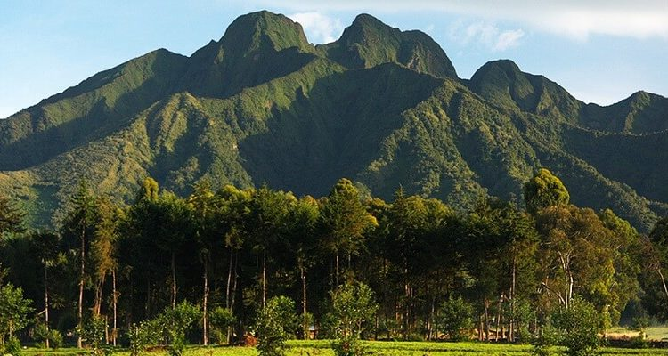

Travel Information
Attractions
- Volcanoes Nationl Park - Musanze. 
Cuisine
Maya's Restaurant is located in the city of Ruhengeri, serving traditional Rwandan food with great service welcoming atmoshere!
Transportation & Lodging
Daily coach services run all throughout the Northern Province on paved major roads.
There are no railways in Rwanda, however shared taxis are very popular among Rwandans.
There are plenty of lodges to stay at in the Northern province, most famously the Virunga Lodge
hotel in Burera. Located between Lakes Ruhondo and Burera, and near the Virunga mountains, this
lodge offers amazing scenery.